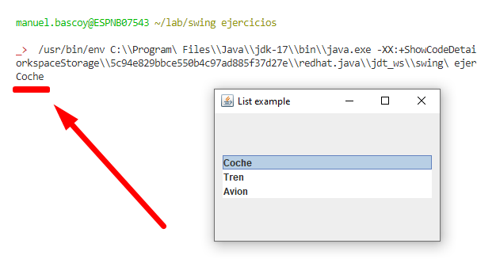
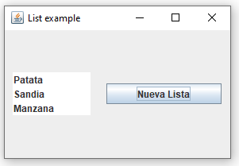

Como crear listas y disparar eventos al seleccionar elementos de la lista.
Para crear una lista tenemos que realizar varios pasos:
El DefaultListModel los creamos de la siguiente manra:
DefaultListModel listModel = new DefaultListModel();
listModel.addElement("Coche");
listModel.addElement("Tren");
listModel.addElement("Avion");Creamos el JList y le pasamos como argumento el listModel:
JList lista = new JList(listModel);De manera optativa podemos usar el metodo setSelectedIndex para indicar cual es el elemento que debe de estar seleccionado por defecto, a este método se le pasa un número para indicar el indice del elemento que queremos que esté seleccionado:
lista.setSelectedIndex(1);Para que al pulsar cada uno de los elemento de la lista se dispare una accion lo haremos con un ListSelectionListener:
ListSelectionListener listListener = new ListSelectionListener() {
public void valueChanged(ListSelectionEvent e){
if (e.getValueIsAdjusting() == false) {
System.out.println(lista.getSelectedValue());
}
}
};
lista.addListSelectionListener(listListener);En este ejemplo simplemente imprimimos el valor seleccionado por la consola usando:
lista.getSelectedValue()Y usamos:
if (e.getValueIsAdjusting() == false)Para que se ejecute el código solo cuando se finalice la seleccion (esto es cuando se levante el boton izquierdo del raton), si no el código se ejecutaría dos veces.
Si queremos una vez creada la lista establecer una nueva lista de elementos, primero definimos una nueva lista:
DefaultListModel listModel2;
listModel2 = new DefaultListModel();
listModel2.addElement("Patata");
listModel2.addElement("Sandia");
listModel2.addElement("Manzana");Y despues usamos el metodo setModel para establecer los nuevos valores de la lista:
lista.setModel(listModel2);En el siguiente ejemplo se usa un botón para cambiar la lista inicial por una nueva lista:
import java.awt.*;
import java.awt.event.*;
import javax.swing.*;
import javax.swing.event.ListSelectionEvent;
import javax.swing.event.ListSelectionListener;
public class ItemList extends JFrame {
public ItemList() {
Container contenedor = getContentPane();
contenedor.setLayout(new GridBagLayout());
GridBagConstraints gridConstraints = new GridBagConstraints();
DefaultListModel listModel = new DefaultListModel();
listModel.addElement("Coche");
listModel.addElement("Tren");
listModel.addElement("Avion");
DefaultListModel listModel2;
listModel2 = new DefaultListModel();
listModel2.addElement("Patata");
listModel2.addElement("Sandia");
listModel2.addElement("Manzana");
gridConstraints.gridx = 0;
gridConstraints.gridy = 0;
gridConstraints.weightx = 1.0;
gridConstraints.weighty = 1.0;
gridConstraints.fill = gridConstraints.HORIZONTAL;
gridConstraints.insets = new Insets(10, 10, 10, 10);
JList lista = new JList(listModel);
contenedor.add(lista, gridConstraints);
lista.setSelectedIndex(1);
gridConstraints.gridx = 1;
gridConstraints.gridy = 0;
gridConstraints.weightx = 1.0;
gridConstraints.weighty = 1.0;
gridConstraints.fill = gridConstraints.HORIZONTAL;
gridConstraints.insets = new Insets(10, 10, 10, 10);
JButton boton = new JButton("Nueva Lista");
contenedor.add(boton, gridConstraints);
ActionListener actionListener = new ActionListener() {
public void actionPerformed(ActionEvent e){
lista.setModel(listModel2);
}
};
boton.addActionListener(actionListener);
ListSelectionListener listListener = new ListSelectionListener() {
public void valueChanged(ListSelectionEvent e){
if (e.getValueIsAdjusting() == false) {
System.out.println(lista.getSelectedValue());
}
}
};
lista.addListSelectionListener(listListener);
pack();
setVisible(true);
setResizable(true);
setSize(300, 200);
setTitle("List example");
setDefaultCloseOperation(EXIT_ON_CLOSE);
}
public static void main(String[] args) {
new ItemList();
}
}Java | Swing | JList